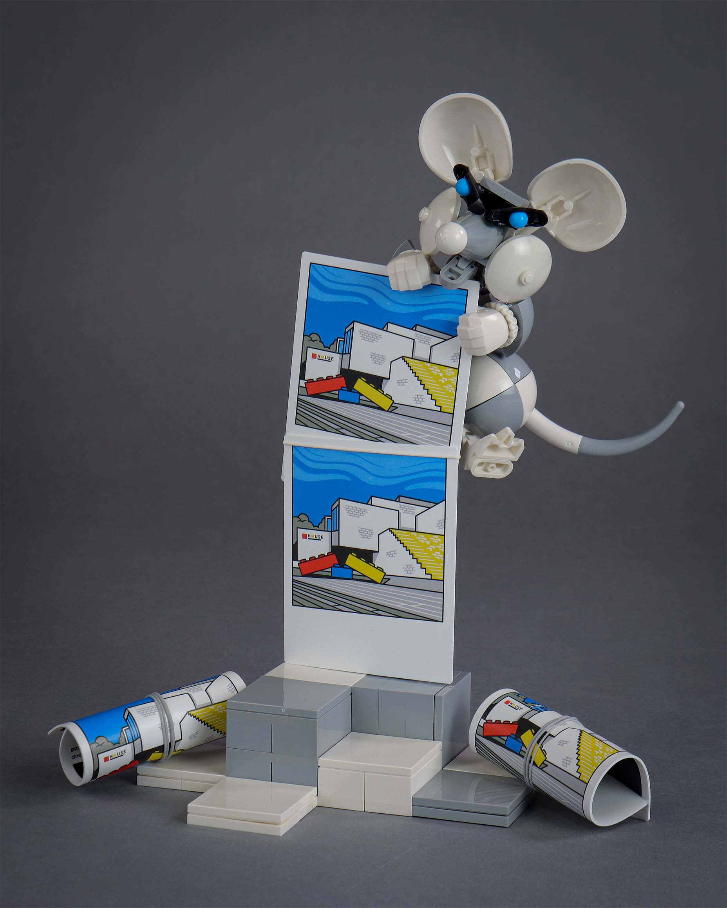
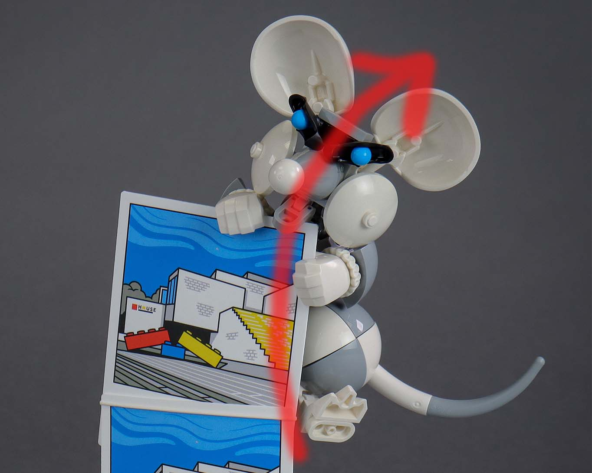
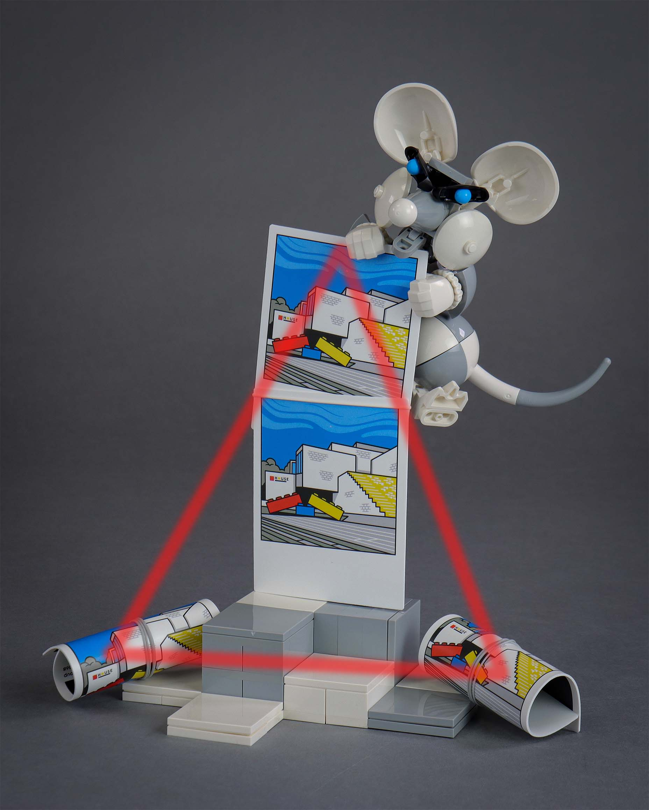
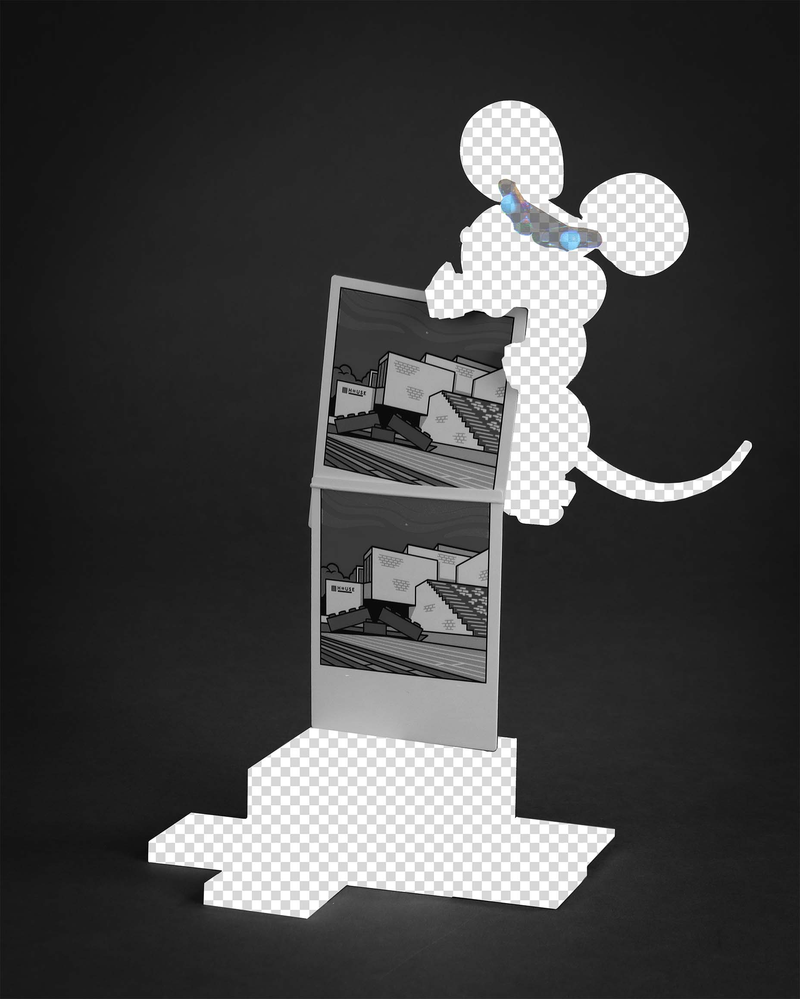
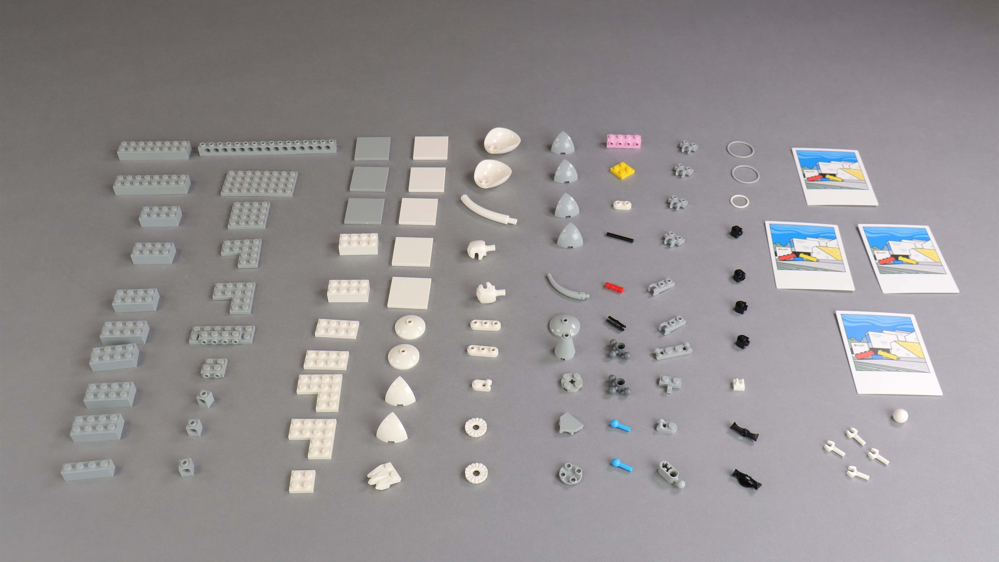

PNG THiEF

This is it - the final round of Rogue Olympics 2026. The theme? "Transparent"...
this round tuff
I found this theme difficult. The previous colour themes were very open ended, but I felt very constrained into having to build something in translucent colours at first. However, unlike the previous colour rounds, there aren't a whole lot of parts in translucent colours to work with. Furthermore, there is difficulty in hiding connections as you can see through the parts - something that I experienced when building glass cannon for round 1.
So, after playing around with some transparent parts with no progress, I thought, "what can I make that doesn't use any transparent parts, but can still be on theme?". I've done quite a bit of Photoshop for this year's olympics and have made many cutouts and transparent backgrounds in the process, so the idea of images with transparent backgrounds aka PNGs came to mind.
While I was at work, I stumbled across some plastic prints from the Polaroid set, which would make the perfect parts to base this PNG build around.
choose your character
With the Polaroid prints as the inspiration piece, I initially thought of just building a checkerboard backdrop and calling it a day. But of course, I love building characters and wanted something a bit more interesting to end off my Rogue Olympics run. People steal copy & paste images all the time from search engines, so I thought about making a thief character. I figured rodents are typically associated with stealing/scavenging for food, so that association people have with these animals would help sell the concept. As always with these builds, I am trying to save parts, so the actual thief is just limbs and a tiny mixel skeleton hidden behind the Polaroid prints.
the checkerboard and silhouette
The checkerboard background is an iconic part of PNGs. I wanted the thief to be in this checkerboard pattern as it was crucial to the theme, but I knew this would come at the cost of colour blocking and overall readability of the character. Therefore, I needed the silhouette to be as clear as possible to sort of mitigate some of the blurriness of the concept from unorthodox colour blocking. The character's silhouette is enhanced through the use of rounder elements and by following a dynamic action line. So hopefully, if the face of the character is a bit tricky to read at first glance, the silhouette helps the viewer connect the dots on what this character is.

the action line
composition technique
I felt the checkerboard pattern of thief might not be enough to convey the PNG idea, so I made the base to also include the checkerboard, albeit in a sort of 3D stylization. Lastly, I added in two more Polaroid prints rolled up by rubber bands. The placement of these is intentional. You'll notice that the MOC, minus the polaroids, is very monochrome. The prints (and eyes) provide a drop of colour to the composition. By placing the additional polaroids on each side, I am creating a visual triangle with these high saturation prints, which direct the viewer's eyes toward the character. Just a fun composition technique 😂.

visual triangle where the peak is in the area of the thief
retirement
And that's it, my final entry. It's been a long two months, and I think my MOC appetite back in March has been satisfied, maybe a little bit too satisfied. Definitely happy to have completed all eight rounds this year but boy am I tired. Hopefully, these insights have been fun reads and maybe contained some useful information; I will now be taking a long nap. goodbye :)


99/101 parts